每日市場研究報告
日期：2026-07-05
本報告僅供研究用途，不構成任何投資建議。
一、市場概況
今日全球市場重點：
- 台股：已取得資料
- 美股：已取得資料
市場摘要：已收集 88 個市場資料檔案。
- 台股：已統計 23 個標的；20 日相對強勢：2303.TW(36.40%)、8046.TW(34.97%)、3711.TW(15.01%)、3661.TW(7.14%)、2881.TW(6.14%)
- 美股：已統計 20 個標的；20 日相對強勢：INTC(6.78%)、ASML(2.49%)、GOOGL(0.26%)、AAPL(-0.53%)、TSM(-0.58%)
二、台股分析
大盤
台股觀察清單，以下列出前 12 個標的：
- 0050.TW：收盤 108.35；20 日 2.12%；60 日 36.81%；200 日均線之上：是
- 0052.TW：收盤 63.55；20 日 2.01%；60 日 35.36%；200 日均線之上：否
- 0056.TW：收盤 52.85；20 日 0.38%；60 日 35.44%；200 日均線之上：是
- 00981A.TW：收盤 32.26；20 日 2.87%；60 日 45.32%；200 日均線之上：是
- 2303.TW：收盤 170.50；20 日 36.40%；60 日 182.75%；200 日均線之上：是
- 2308.TW：收盤 2075.00；20 日 -14.43%；60 日 24.62%；200 日均線之上：是
- 2317.TW：收盤 240.50；20 日 -17.92%；60 日 19.35%；200 日均線之上：是
- 2330.TW：收盤 2445.00；20 日 2.52%；60 日 25.38%；200 日均線之上：是
- 2357.TW：收盤 675.00；20 日 -24.33%；60 日 20.11%；200 日均線之上：是
- 2376.TW：收盤 338.50；20 日 -9.49%；60 日 38.45%；200 日均線之上：是
- 2382.TW：收盤 377.00；20 日 -6.68%；60 日 22.60%；200 日均線之上：是
- 2412.TW：收盤 141.00；20 日 -0.35%；60 日 5.22%；200 日均線之上：是
- 其餘 11 個標的已納入統計與強弱排行。
成交量
量價分析標的數：23
- 量價偏多觀察：3661.TW(價漲量增, 分數 3, 5 日 20.16%, 量比 1.57x)、3711.TW(價漲量增, 分數 3, 5 日 7.91%, 量比 1.41x)、2303.TW(價漲量縮, 分數 1, 5 日 3.96%, 量比 0.25x)
- 量價偏弱觀察：2376.TW(價漲量縮, 分數 -3, 5 日 5.95%, 量比 0.42x)、0050.TW(價漲量縮, 分數 -2, 5 日 5.09%, 量比 0.61x)、00981A.TW(價漲量縮, 分數 -2, 5 日 7.86%, 量比 0.71x)、2308.TW(量能中性, 分數 -2, 5 日 14.64%, 量比 1.12x)、2317.TW(量能中性, 分數 -2, 5 日 -3.22%, 量比 0.74x)
類股輪動
MVP 尚未接入完整類股分類資料，暫不推論類股輪動。
強勢股
2303.TW(36.40%)、8046.TW(34.97%)、3711.TW(15.01%)、3661.TW(7.14%)、2881.TW(6.14%)
弱勢股
2357.TW(-24.33%)、2317.TW(-17.92%)、2308.TW(-14.43%)、3231.TW(-9.66%)、2376.TW(-9.49%)
三、美股分析
主要 ETF
- QQQ：收盤 712.60；20 日 -4.25%；60 日 21.07%；200 日均線之上：是
- VOO：收盤 684.84；20 日 -1.23%；60 日 13.00%；200 日均線之上：是
- VT：收盤 156.17；20 日 -1.13%；60 日 11.45%；200 日均線之上：是
- SOXX：收盤 566.32；20 日 -8.02%；60 日 62.85%；200 日均線之上：是
科技股
- NVDA：收盤 194.83；20 日 -9.28%；60 日 9.39%；200 日均線之上：是
- AAPL：收盤 308.63；20 日 -0.53%；60 日 21.75%；200 日均線之上：是
- MSFT：收盤 390.49；20 日 -8.62%；60 日 4.89%；200 日均線之上：否
- TSM：收盤 434.16；20 日 -0.58%；60 日 25.73%；200 日均線之上：是
半導體
- SOXX：收盤 566.32；20 日 -8.02%；60 日 62.85%；200 日均線之上：是
- NVDA：收盤 194.83；20 日 -9.28%；60 日 9.39%；200 日均線之上：是
- TSM：收盤 434.16；20 日 -0.58%；60 日 25.73%；200 日均線之上：是
AI 概念股
目前以 NVDA、MSFT、TSM 作為 AI 相關觀察清單，不擴大推論到未納入資料的標的。
四、技術分析
技術分析狀態：已取得資料
AI 不重新計算 RSI、MACD、EMA、KD、ATR、ADX，只解讀 Python 輸出的結果。
Python 已提供價格趨勢統計，包括 1 日、5 日、20 日、60 日、252 日漲跌幅，以及 20/60/200 日均線位置與 52 週高低點距離。
Python 也已計算 RSI(14)、MACD(12/26/9)、EMA(20/50/200)、KD(9)、Bollinger Bands(20, 2)、ATR(14)、ADX(14)。
- 0050.TW：RSI14 58.34；MACD hist -0.21；K/D 56.95/54.88；ADX 17.22；布林上/中/下 112.11/105.64/99.17
- 2330.TW：RSI14 56.95；MACD hist 0.47；K/D 57.94/54.91；ADX 18.23；布林上/中/下 2531.92/2383.25/2234.58
- QQQ：RSI14 48.12；MACD hist -2.17；K/D 42.48/47.04；ADX 17.63；布林上/中/下 747.96/721.10/694.25
- VOO：RSI14 53.31；MACD hist -0.39；K/D 62.32/52.58；ADX 19.98；布林上/中/下 695.99/681.70/667.41
- SOXX：RSI14 47.30；MACD hist -7.08；K/D 37.04/48.67；ADX 15.60；布林上/中/下 658.80/597.79/536.78
- NVDA：RSI14 41.16；MACD hist -1.00；K/D 26.20/26.74；ADX 18.03；布林上/中/下 216.73/203.49/190.24
量價分析
Python 已依成交量與價格變化產生量價型態，AI 只解讀輸出結果。
- 0050.TW：價漲量縮；5 日 5.09%；20 日 2.12%；量比 20 日均量 0.61 倍；OBV 20 日量壓 -29.71%；說明：短線上漲但量能未同步放大、近 5 日均量低於 20 日均量
- 2330.TW：量能中性；5 日 4.49%；20 日 2.52%；量比 20 日均量 0.76 倍；OBV 20 日量壓 -8.78%；說明：量價未出現明確偏多或偏空結構
- QQQ：量能中性；5 日 -0.53%；20 日 -4.25%；量比 20 日均量 0.94 倍；OBV 20 日量壓 -25.66%；說明：量價未出現明確偏多或偏空結構、OBV 20 日量壓偏負向
- VOO：量縮整理；5 日 1.35%；20 日 -1.23%；量比 20 日均量 0.56 倍；OBV 20 日量壓 -7.48%；說明：價格震盪不大且成交量偏低、近 5 日均量低於 20 日均量
- SOXX：量能中性；5 日 -9.42%；20 日 -8.02%；量比 20 日均量 1.29 倍；OBV 20 日量壓 -16.80%；說明：量價未出現明確偏多或偏空結構、20 日價格趨勢偏弱
- NVDA：量能中性；5 日 -0.46%；20 日 -9.28%；量比 20 日均量 0.90 倍；OBV 20 日量壓 -18.32%；說明：量價未出現明確偏多或偏空結構、20 日價格趨勢偏弱
五、新聞分析
新聞分析狀態：已取得資料
最近 30 天 RSS 收集結果：財經新聞 89 則，科技新聞 30 則，台灣財經新聞 193 則。
新聞摘要：最近新聞共 312 則；主要分類分布為 ai_semiconductor:215、other:70、macro_rates:29；高頻關鍵字包含 AI、台積電、台股、Meta、半導體、外資、Trump、目標價。
分類統計：AI / 半導體:215、總經 / 利率:29、財報 / 企業:23、市場風險:16、其他:70
高頻關鍵字：AI(204)、台積電(66)、台股(36)、Meta(29)、半導體(18)、外資(17)、Trump(14)、目標價(11)、利率(8)、Amazon(6)
代表新聞：
- [Google News 台股] 鴻海6月營收8,218億、年增逾52％ 創同期新高- 產業 - 工商時報 (Sun, 05 Jul 2026 08:20:00 GMT)
- [Google News 台股] 鴻海6月營收8218億元、Q2營收2兆5133億元 皆創歷年同期最高 - 財訊 (Sun, 05 Jul 2026 08:11:38 GMT)
- [Google News 台股] 上周台股漲2,208點、周線翻紅 法人：費半若能止穩 台股更穩健 - UDN (Sun, 05 Jul 2026 06:36:23 GMT)
- [Google News 台股] 科技大咖除息秀開演！ 聯發科、南亞科、聯電接力登場 - Yahoo股市 (Sun, 05 Jul 2026 06:14:00 GMT)
- [Google News 台股] Google 等不及448G，聯發科 336G 補位成功—Google 下一代TPU 高速傳輸之爭，聯發科與博通的攻防戰，台灣供應鏈完整解析｜股市話題｜豐雲學堂2026 年 07 月 - sinotrade.com.tw (Sun, 05 Jul 2026 05:40:30 GMT)
- [Google News 台股] 無懼外資賣超 台股單週漲點創史上第5大 - 自由財經 (Sun, 05 Jul 2026 05:39:34 GMT)
- [Google News 台股] 鴻海(2317)衝上 289 元後，真正要驗證的是毛利率能不能跟上-王澤明 - CMoney投資網誌 (Sun, 05 Jul 2026 05:01:05 GMT)
- [Google News 台股] 鴻海(2317)AI伺服器訂單拉長到明年底，下一關看什麼？-王澤明 - CMoney投資網誌 (Sun, 05 Jul 2026 02:49:10 GMT)
分析：
- 市場影響：可依新聞分類與高頻關鍵字判斷市場關注焦點。
- 利多：若 AI / 半導體、企業財報與展望新聞占比提高，偏向成長題材支撐。
- 利空：若總經利率、波動、地緣政治與衰退新聞占比提高，需提高風險意識。
事件影響
依新聞標題與摘要的標的別名、產業主題與事件關鍵字進行規則式匹配。
台股
- 事件支撐觀察：0050.TW(事件偏多, 分數 5, 新聞 40 則)、0052.TW(事件偏多, 分數 5, 新聞 40 則)、0056.TW(事件偏多, 分數 5, 新聞 40 則)、00981A.TW(事件偏多, 分數 5, 新聞 40 則)、2454.TW(事件偏多, 分數 5, 新聞 24 則)
- 事件風險觀察：資料不足
- 0050.TW：事件偏多，分數 5，匹配新聞 40 則，主題 台股 / ETF:40、AI / 半導體:22、財報 / 企業:2；代表新聞：上周台股漲2,208點、周線翻紅 法人：費半若能止穩 台股更穩健 - UDN
- 0052.TW：事件偏多，分數 5，匹配新聞 40 則，主題 台股 / ETF:40、AI / 半導體:22、財報 / 企業:2；代表新聞：上周台股漲2,208點、周線翻紅 法人：費半若能止穩 台股更穩健 - UDN
- 0056.TW：事件偏多，分數 5，匹配新聞 40 則，主題 台股 / ETF:40、AI / 半導體:22、財報 / 企業:2；代表新聞：上周台股漲2,208點、周線翻紅 法人：費半若能止穩 台股更穩健 - UDN
- 00981A.TW：事件偏多，分數 5，匹配新聞 40 則，主題 台股 / ETF:40、AI / 半導體:22、財報 / 企業:2；代表新聞：上周台股漲2,208點、周線翻紅 法人：費半若能止穩 台股更穩健 - UDN
- 2454.TW：事件偏多，分數 5，匹配新聞 24 則，主題 AI / 半導體:9、財報 / 企業:8；代表新聞：台積電及聯發科領軍台股收漲1,126點 6月高低差距達6,212點 - 經濟日報
- 2330.TW：事件偏多，分數 2，匹配新聞 66 則，主題 AI / 半導體:66、財報 / 企業:7；代表新聞：台股開低一度急殺近900點！台積電跌破10日線、中纖爆量漲停吸睛 - 經濟日報
美股
- 事件支撐觀察：VOO(事件偏多, 分數 3, 新聞 56 則)、VT(事件偏多, 分數 3, 新聞 54 則)、QQQ(事件偏多, 分數 2, 新聞 58 則)
- 事件風險觀察：SOXX(事件偏空, 分數 -2, 新聞 98 則)
- VOO：事件偏多，分數 3，匹配新聞 56 則，主題 AI / 半導體:43、財報 / 企業:17、市場風險:3、總經 / 利率:1；代表新聞：鴻海(2317)AI伺服器訂單拉長到明年底，下一關看什麼？-王澤明 - CMoney投資網誌
- VT：事件偏多，分數 3，匹配新聞 54 則，主題 AI / 半導體:43、財報 / 企業:17、市場風險:3；代表新聞：台積電下一步曝光！外媒揭關鍵優勢 看好股價再衝一波 - 自由財經
- QQQ：事件偏多，分數 2，匹配新聞 58 則，主題 AI / 半導體:43、財報 / 企業:17、市場風險:3；代表新聞：台積電下一步曝光！外媒揭關鍵優勢 看好股價再衝一波 - 自由財經
- SOXX：事件偏空，分數 -2，匹配新聞 98 則，主題 AI / 半導體:98、財報 / 企業:11、市場風險:1；代表新聞：台股開低一度急殺近900點！台積電跌破10日線、中纖爆量漲停吸睛 - 經濟日報
六、總經分析
總經分析狀態：已取得資料
包含：
- CPI
- 利率
- PMI
- GDP
- VIX
- 美元指數
- 公債殖利率
總經摘要：Fed Funds Rate 3.63，近 3 期趨勢 持平；美國 10 年期公債殖利率 4.485，近 3 期趨勢 連續上升；VIX 16.01，近 3 期趨勢 連續下降。整體總經風險分級：medium。
- CPI：333.98（2026-05-01）；前期變化 +1.57 / 0.47%；近 3 期趨勢 連續上升；風險 中等
- Fed Funds Rate：3.63（2026-06-01）；前期變化 0.00 / 0.00%；近 3 期趨勢 持平；風險 偏低
- GDP：31865.72（2026-01-01）；前期變化 +443.19 / 1.41%；近 3 期趨勢 連續上升；風險 中等
- 美元指數：120.89（2026-06-26）；前期變化 -0.17 / -0.14%；近 3 期趨勢 連續下降；風險 中等
- PMI：PMI 尚未接入可靠公開資料來源。
- VIX：16.01（2026-07-03）；前期變化 -0.14 / -0.87%；近 3 期趨勢 連續下降；風險 偏低
- 美國 10 年期公債殖利率：4.49（2026-07-02）；前期變化 +0.01 / 0.22%；近 3 期趨勢 連續上升；風險 中等
整體總經風險分級：中等
七、風險分析
目前主要風險：
- 市場風險：依 VIX、均線與短中期漲跌幅觀察
- 總經風險：依利率、美元指數與公債殖利率觀察
- 政策風險：資料來源尚未接入政策事件資料
- 地緣政治：資料來源尚未接入地緣政治事件資料
風險摘要：總經風險分級：中等。
總經風險總評：中等
- Fed Funds Rate：偏低；趨勢 持平；最新值 3.63
- 美元指數：中等；趨勢 連續下降；最新值 120.89
- VIX：偏低；趨勢 連續下降；最新值 16.01
- 美國 10 年期公債殖利率：中等；趨勢 連續上升；最新值 4.49
八、未來觀察重點
接下來應持續關注：
- 財報
- 經濟數據
- Fed
- 國際事件
九、圖表摘要
以下圖表由 Python 自動產生，包含價格均線、量價關係與回測權益曲線。
0050.TW

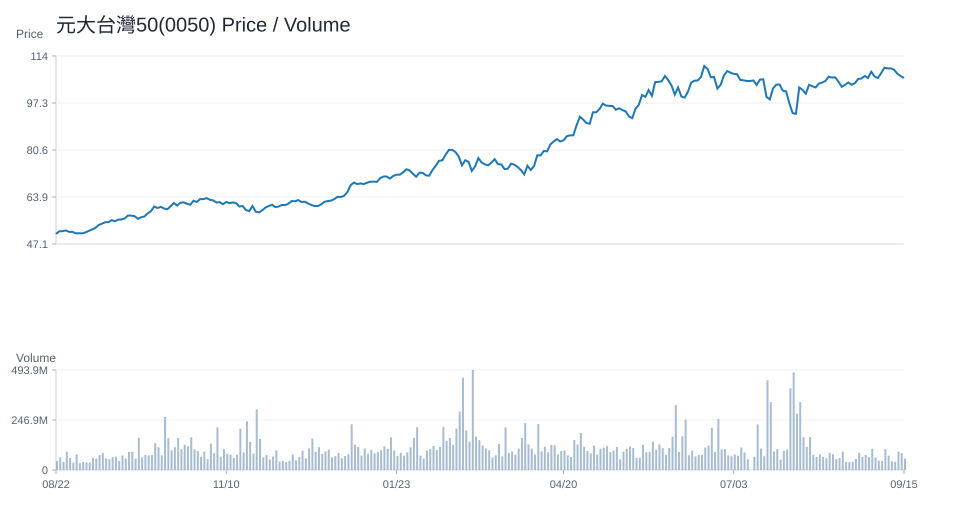

2330.TW
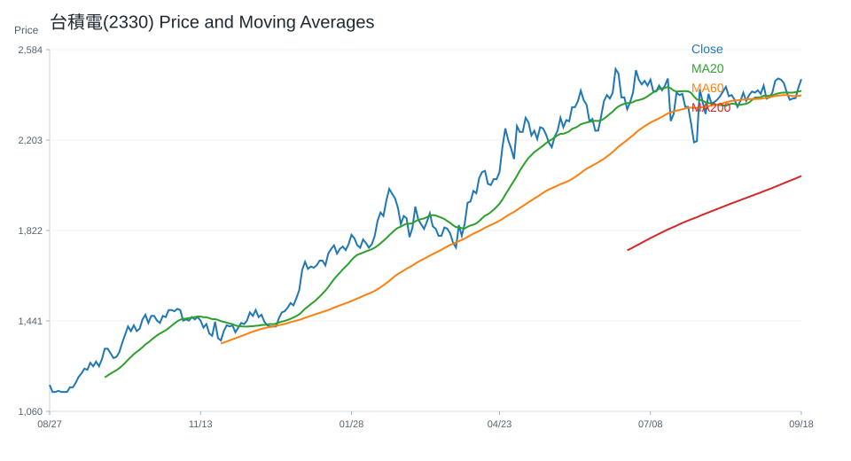

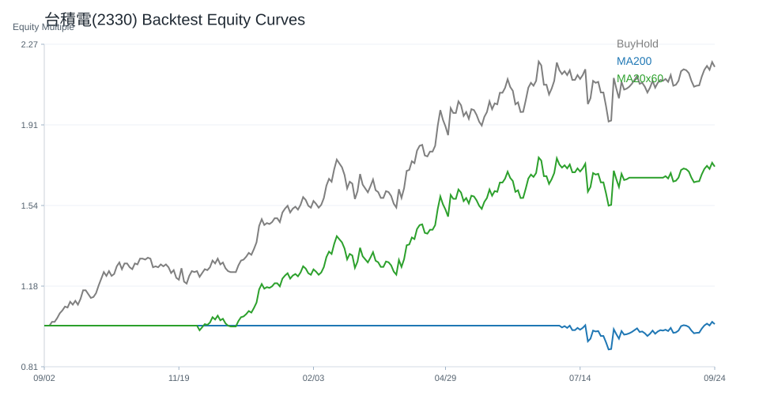
QQQ
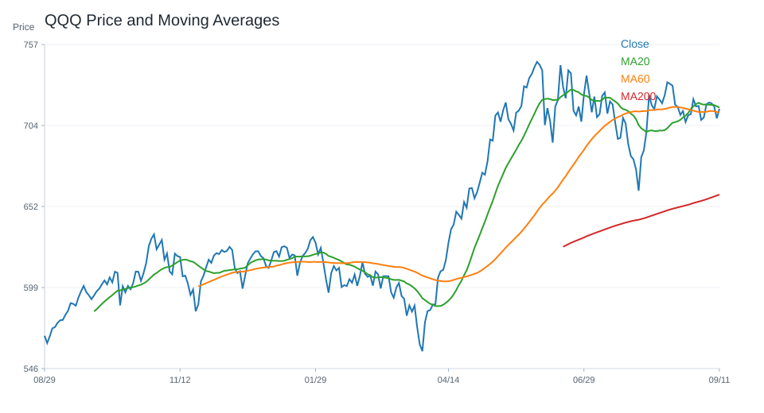
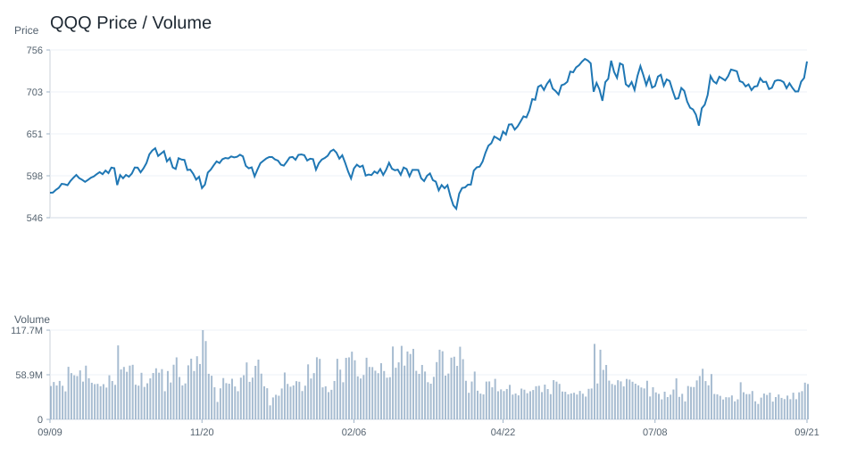
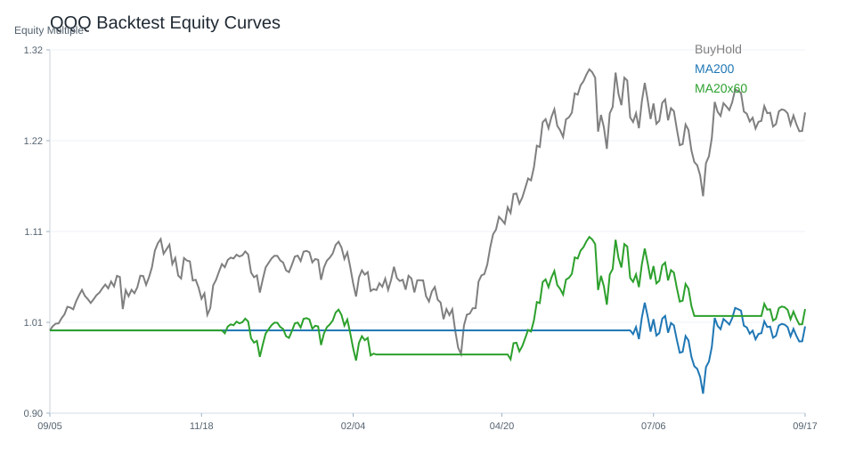
VOO
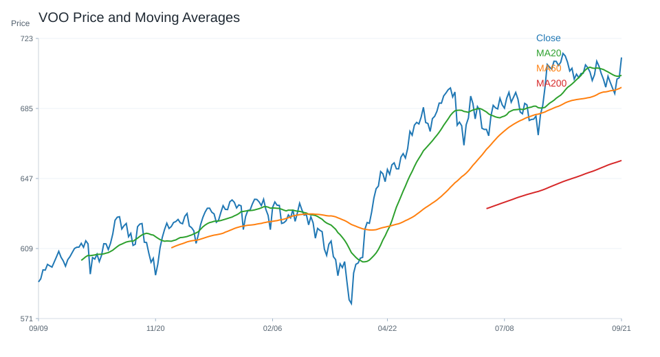
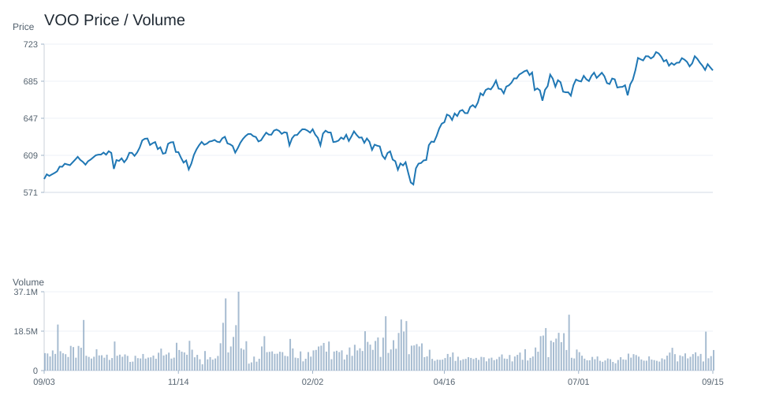
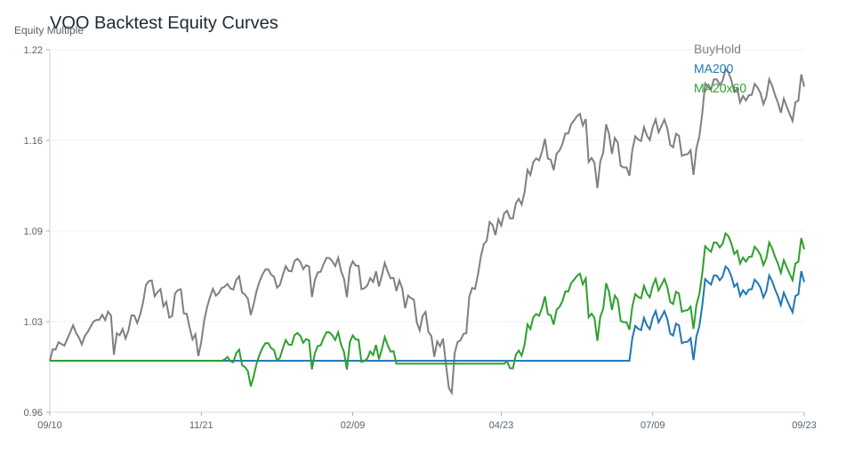
SOXX
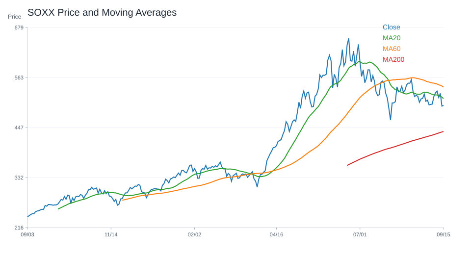
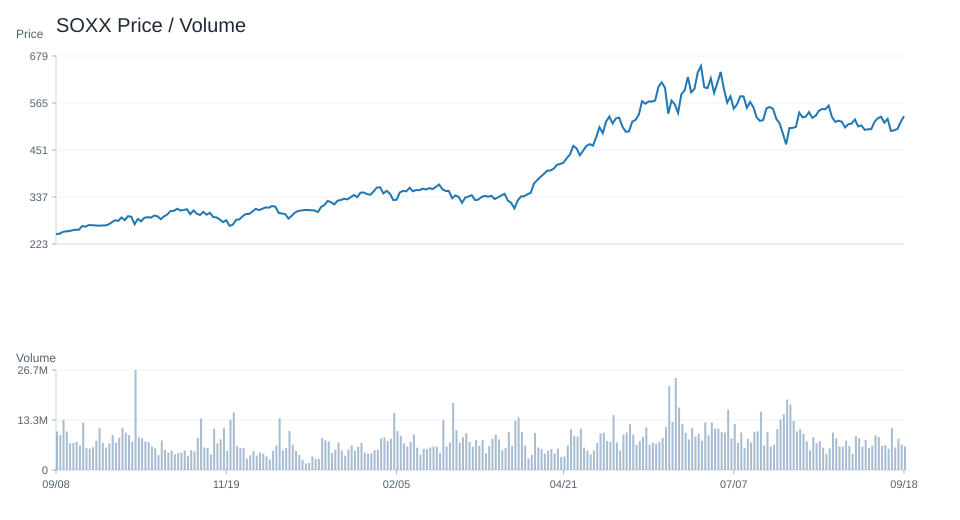
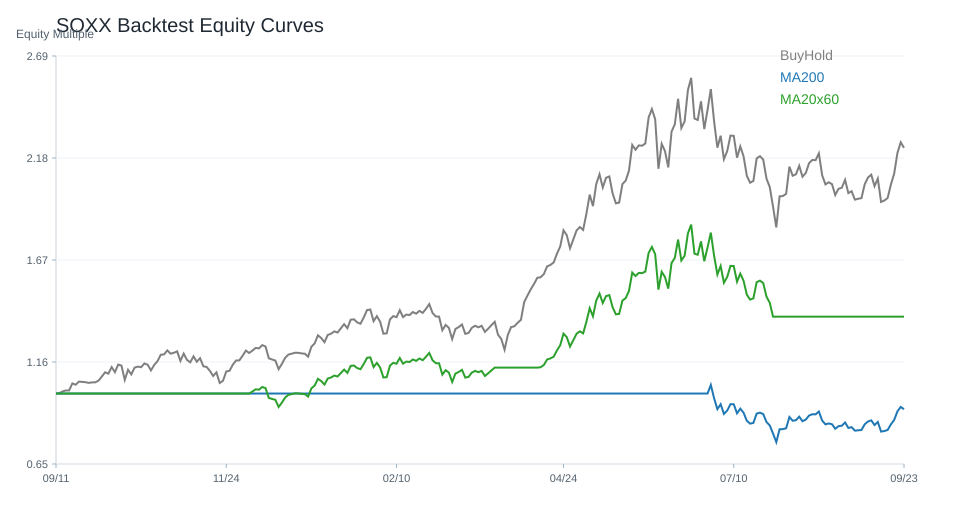
NVDA
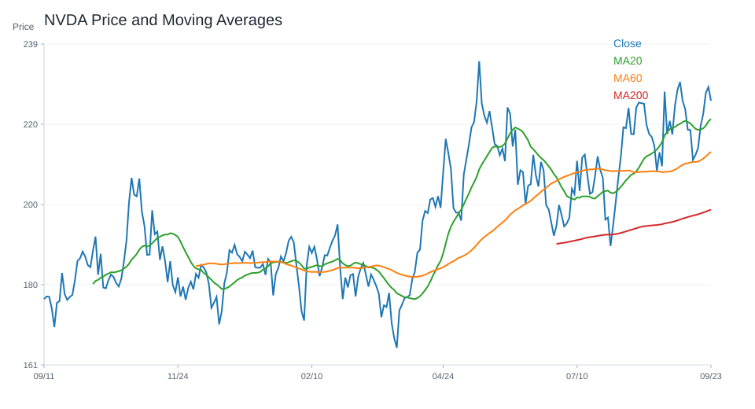
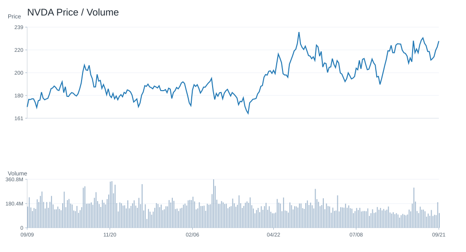
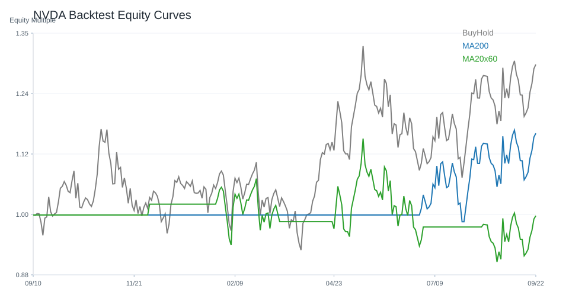
十、個股研究訊號
研究訊號僅供分析，不是買賣建議。
台股
偏多研究訊號：
- 3711.TW：強烈偏多，分數 10。依據：20 日漲幅偏強、60 日趨勢偏強、站上 20 日均線、站上 200 日均線。
- 3661.TW：強烈偏多，分數 9。依據：20 日漲幅偏強、60 日趨勢偏強、站上 20 日均線、站上 200 日均線。
- 2330.TW：強烈偏多，分數 8。依據：60 日趨勢偏強、站上 20 日均線、站上 200 日均線、RSI 位於中性偏強區。
- 3017.TW：偏多，分數 5。依據：60 日趨勢偏強、站上 20 日均線、站上 200 日均線、RSI 位於中性偏強區。
- 6669.TW：偏多，分數 5。依據：20 日跌幅偏弱、60 日趨勢偏強、站上 20 日均線、站上 200 日均線。
低分 / 風險觀察：
- 2317.TW：偏空，分數 -3。依據：20 日跌幅偏弱、60 日趨勢偏強、跌破 20 日均線、站上 200 日均線。
- 2376.TW：偏空，分數 -3。依據：20 日跌幅偏弱、60 日趨勢偏強、跌破 20 日均線、站上 200 日均線。
- 2357.TW：中性，分數 -2。依據：20 日跌幅偏弱、60 日趨勢偏強、跌破 20 日均線、站上 200 日均線。
- 2412.TW：中性，分數 -2。依據：跌破 20 日均線、站上 200 日均線、RSI 位於中性偏強區、MACD histogram 為負。
- 3231.TW：中性，分數 -2。依據：20 日跌幅偏弱、60 日趨勢偏強、跌破 20 日均線、站上 200 日均線。
美股
偏多研究訊號：
- AAPL：強烈偏多，分數 7。依據：60 日趨勢偏強、站上 20 日均線、站上 200 日均線、RSI 位於中性偏強區。
- AMZN：強烈偏多，分數 7。依據：60 日趨勢偏強、站上 20 日均線、站上 200 日均線、RSI 位於中性偏強區。
- VOO：強烈偏多，分數 6。依據：60 日趨勢偏強、站上 20 日均線、站上 200 日均線、RSI 位於中性偏強區。
- VT：強烈偏多，分數 6。依據：60 日趨勢偏強、站上 20 日均線、站上 200 日均線、RSI 位於中性偏強區。
- GOOGL：偏多，分數 5。依據：60 日趨勢偏強、站上 20 日均線、站上 200 日均線、RSI 位於中性偏強區。
低分 / 風險觀察：
- ORCL：強烈偏空，分數 -12。依據：20 日跌幅偏弱、跌破 20 日均線、跌破 200 日均線、RSI 偏弱。
- AVGO：強烈偏空，分數 -6。依據：20 日跌幅偏弱、跌破 20 日均線、跌破 200 日均線、MACD histogram 為負。
- NVDA：偏空，分數 -4。依據：20 日跌幅偏弱、跌破 20 日均線、站上 200 日均線、MACD histogram 為負。
- SOXX：偏空，分數 -4。依據：20 日跌幅偏弱、60 日趨勢偏強、跌破 20 日均線、站上 200 日均線。
- CRM：偏空，分數 -3。依據：20 日跌幅偏弱、站上 20 日均線、跌破 200 日均線、RSI 位於中性偏強區。
十一、結論
目前市場偏向：偏多。
原因：綜合評分 4；0050 20 日漲跌與 200 日均線偏多；QQQ 事件新聞偏多；新聞主題偏向 AI、半導體或企業成長；總經風險中等；QQQ 200 日均線策略歷史風險報酬較佳。
不得提供投資建議。
所有分析僅供研究用途。
系統狀態
- 回測狀態：已取得資料
- 研究用途：research_only
- 投資建議：否
回測摘要
回測假設：交易成本 0.10%；策略使用前一交易日訊號承擔下一交易日報酬，避免偷看未來資料。
回測僅為歷史資料研究，不代表未來績效，也不是投資建議。
策略說明：
- price_above_ma200：收盤價高於 200 日均線時持有，否則空手。
- ma20_cross_ma60：20 日均線高於 60 日均線時持有，否則空手。
- buy_and_hold：買入持有基準，用於比較策略是否優於單純持有。
台股回測標的數：23
- 200 日均線策略 Sharpe 前五：00981A.TW(Sharpe 2.19, CAGR 59.27%, MDD -9.14%, 交易 1 次, 均持有 78.0 日)、0050.TW(Sharpe 1.87, CAGR 40.24%, MDD -21.30%, 交易 3 次, 均持有 246.33 日)、3017.TW(Sharpe 1.82, CAGR 115.39%, MDD -42.26%, 交易 7 次, 均持有 100.43 日)、0056.TW(Sharpe 1.70, CAGR 24.47%, MDD -17.70%, 交易 9 次, 均持有 75.78 日)、2891.TW(Sharpe 1.61, CAGR 35.67%, MDD -17.86%, 交易 4 次, 均持有 192.75 日)
- 20/60 均線策略 Sharpe 前五：00981A.TW(Sharpe 3.03, CAGR 143.58%, MDD -9.14%, 交易 1 次, 均持有 218.0 日)、2308.TW(Sharpe 1.65, CAGR 65.55%, MDD -27.80%, 交易 9 次, 均持有 73.33 日)、0050.TW(Sharpe 1.64, CAGR 34.33%, MDD -21.30%, 交易 6 次, 均持有 120.83 日)、3017.TW(Sharpe 1.57, CAGR 86.31%, MDD -30.69%, 交易 8 次, 均持有 84.88 日)、2330.TW(Sharpe 1.47, CAGR 41.18%, MDD -24.54%, 交易 6 次, 均持有 121.33 日)
美股回測標的數：20
- 200 日均線策略 Sharpe 前五：MU(Sharpe 1.57, CAGR 84.48%, MDD -56.04%, 交易 11 次, 均持有 56.82 日)、NVDA(Sharpe 1.29, CAGR 54.02%, MDD -29.35%, 交易 5 次, 均持有 146.6 日)、VOO(Sharpe 1.29, CAGR 14.02%, MDD -10.35%, 交易 5 次, 均持有 148.4 日)、QQQ(Sharpe 1.28, CAGR 20.03%, MDD -13.56%, 交易 4 次, 均持有 186.0 日)、TSM(Sharpe 1.28, CAGR 43.89%, MDD -23.30%, 交易 8 次, 均持有 89.0 日)
- 20/60 均線策略 Sharpe 前五：MU(Sharpe 1.49, CAGR 78.50%, MDD -36.17%, 交易 10 次, 均持有 67.6 日)、NVDA(Sharpe 1.46, CAGR 63.42%, MDD -27.12%, 交易 7 次, 均持有 95.29 日)、META(Sharpe 1.24, CAGR 39.37%, MDD -25.19%, 交易 8 次, 均持有 79.5 日)、TSM(Sharpe 1.24, CAGR 40.36%, MDD -22.56%, 交易 8 次, 均持有 86.38 日)、AAPL(Sharpe 1.04, CAGR 17.15%, MDD -15.23%, 交易 8 次, 均持有 68.12 日)